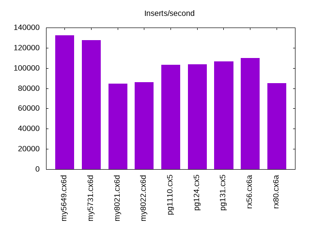
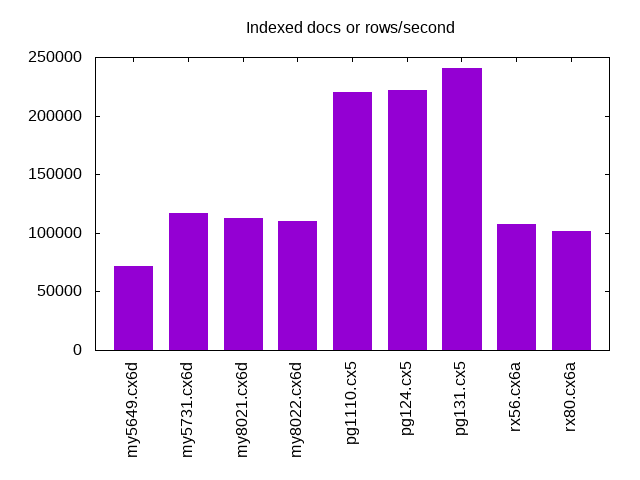
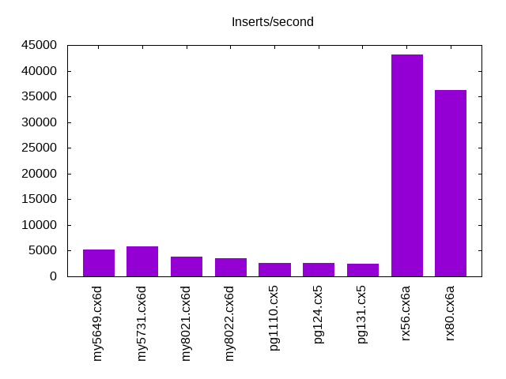
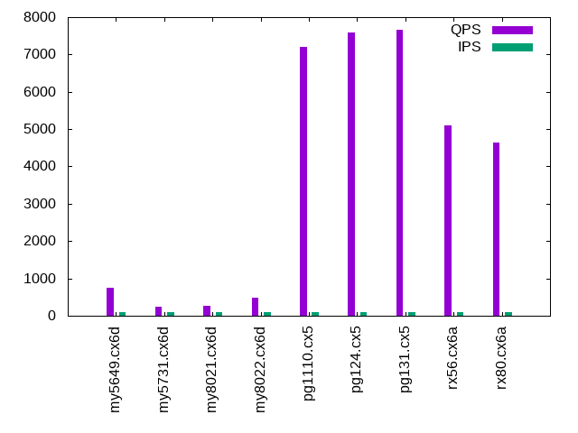
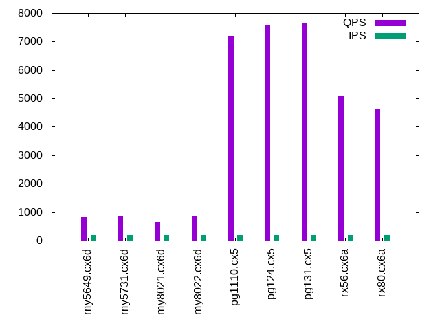
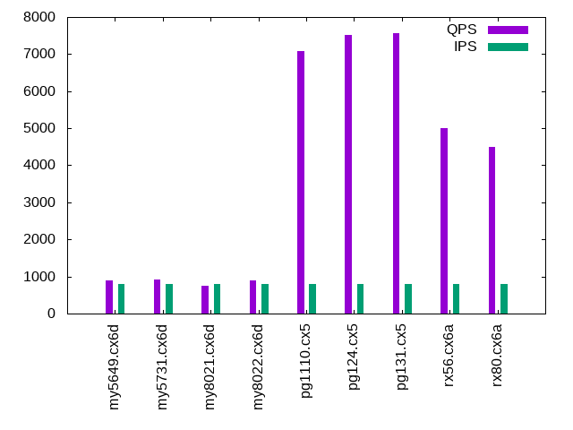
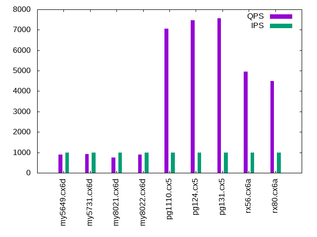

This is a report for the insert benchmark with 500M docs and 1 client(s). It is generated by scripts (bash, awk, sed) and Tufte might not be impressed. An overview of the insert benchmark is here and a short update is here. Below, by DBMS, I mean DBMS+version.config. An example is my8020.c10b40 where my means MySQL, 8020 is version 8.0.20 and c10b40 is the name for the configuration file.
The test server is an Intel NUC. Clients and the DBMS share one server.
The tested DBMS are:
The numbers are inserts/s for l.i0 and l.i1, indexed docs (or rows) /s for l.x and queries/s for q*.2. The values are the average rate over the entire test for inserts (IPS) and queries (QPS). The range of values for IPS and QPS is split into 3 parts: bottom 25%, middle 50%, top 25%. Values in the bottom 25% have a red background, values in the top 25% have a green background and values in the middle have no color. A gray background is used for values that can be ignored because the DBMS did not sustain the target insert rate. Red backgrounds are not used when the minimum value is within 80% of the max value.
| dbms | l.i0 | l.x | l.i1 | q100.2 | q200.2 | q400.2 | q600.2 | q800.2 | q1000.2 |
|---|---|---|---|---|---|---|---|---|---|
| my5649.cx6d | 132415 | 71433 | 5200 | 759 | 831 | 875 | 877 | 891 | 888 |
| my5731.cx6d | 127714 | 117174 | 5841 | 239 | 871 | 905 | 915 | 920 | 911 |
| my8021.cx6d | 84431 | 112813 | 3858 | 274 | 643 | 734 | 762 | 744 | 748 |
| my8022.cx6d | 86029 | 110349 | 3576 | 478 | 863 | 877 | 872 | 888 | 892 |
| pg1110.cx5 | 103391 | 220211 | 2587 | 7209 | 7175 | 7119 | 7080 | 7089 | 7062 |
| pg124.cx5 | 103455 | 221971 | 2568 | 7584 | 7599 | 7548 | 7540 | 7518 | 7470 |
| pg131.cx5 | 106701 | 240548 | 2481 | 7664 | 7640 | 7598 | 7578 | 7561 | 7558 |
| rx56.cx6a | 109721 | 107827 | 43103 | 5099 | 5104 | 5085 | 5066 | 5013 | 4959 |
| rx80.cx6a | 84918 | 101481 | 36232 | 4651 | 4650 | 4588 | 4602 | 4502 | 4485 |
This lists the average rate of inserts/s for the tests that do inserts concurrent with queries. For such tests the query rate is listed in the table above. The read+write tests are setup so that the insert rate should match the target rate every second. Cells that are not at least 95% of the target have a red background to indicate a failure to satisfy the target.
| dbms | q100.2 | q200.2 | q400.2 | q600.2 | q800.2 | q1000.2 |
|---|---|---|---|---|---|---|
| my5649.cx6d | 100 | 200 | 399 | 599 | 798 | 998 |
| my5731.cx6d | 100 | 200 | 399 | 599 | 799 | 998 |
| my8021.cx6d | 100 | 200 | 399 | 599 | 799 | 998 |
| my8022.cx6d | 100 | 200 | 399 | 599 | 799 | 998 |
| pg1110.cx5 | 100 | 200 | 399 | 599 | 799 | 999 |
| pg124.cx5 | 100 | 200 | 399 | 599 | 799 | 998 |
| pg131.cx5 | 100 | 200 | 399 | 599 | 799 | 998 |
| rx56.cx6a | 100 | 200 | 399 | 599 | 799 | 998 |
| rx80.cx6a | 100 | 200 | 400 | 599 | 799 | 998 |
| target | 100 | 200 | 400 | 600 | 800 | 1000 |
l.i0: load without secondary indexes. Graphs for performance per 1-second interval are here.
Average throughput:
Insert response time histogram: each cell has the percentage of responses that take <= the time in the header and max is the max response time in seconds. For the max column values in the top 25% of the range have a red background and in the bottom 25% of the range have a green background. The red background is not used when the min value is within 80% of the max value.
| dbms | 256us | 1ms | 4ms | 16ms | 64ms | 256ms | 1s | 4s | 16s | gt | max |
|---|---|---|---|---|---|---|---|---|---|---|---|
| my5649.cx6d | 97.162 | 2.403 | 0.372 | 0.059 | 0.001 | 0.003 | 0.404 | ||||
| my5731.cx6d | 98.452 | 1.302 | 0.241 | 0.001 | 0.004 | 0.117 | |||||
| my8021.cx6d | 99.595 | 0.373 | 0.030 | 0.002 | 0.127 | ||||||
| my8022.cx6d | 0.009 | 99.740 | 0.130 | 0.117 | 0.003 | 0.122 | |||||
| pg1110.cx5 | 94.162 | 5.836 | 0.001 | 0.001 | 0.034 | ||||||
| pg124.cx5 | 94.458 | 5.541 | 0.001 | nonzero | 0.049 | ||||||
| pg131.cx5 | 96.358 | 3.636 | 0.005 | 0.001 | nonzero | 0.193 | |||||
| rx56.cx6a | 98.597 | 1.351 | 0.049 | nonzero | 0.004 | 0.164 | |||||
| rx80.cx6a | nonzero | 99.835 | 0.147 | 0.015 | 0.002 | 0.178 |
Performance metrics for the DBMS listed above. Some are normalized by throughput, others are not. Legend for results is here.
ips qps rps rmbps wps wmbps rpq rkbpq wpi wkbpi csps cpups cspq cpupq dbgb1 dbgb2 rss maxop p50 p99 tag 132415 0 1159 4.5 532.5 44.4 0.009 0.035 0.004 0.344 15874 46.1 0.120 14 32.9 73.4 10.6 0.404 134107 87939 my5649.cx6d 127714 0 0 0.0 537.3 43.3 0.000 0.000 0.004 0.347 14464 46.7 0.113 15 32.9 73.4 10.9 0.117 128463 113973 my5731.cx6d 84431 0 0 0.0 436.7 30.0 0.000 0.000 0.005 0.364 19593 41.0 0.232 19 32.8 73.3 11.1 0.127 84861 74832 my8021.cx6d 86029 0 0 0.0 441.2 30.6 0.000 0.000 0.005 0.364 16146 41.6 0.188 19 32.8 73.3 11.1 0.122 86347 76725 my8022.cx6d 103391 0 39 0.3 188.0 39.6 0.000 0.003 0.002 0.393 12355 42.1 0.119 16 47.8 55.8 0.0 0.034 103390 100293 pg1110.cx5 103455 0 44 0.4 197.0 39.8 0.000 0.003 0.002 0.394 12381 42.1 0.120 16 47.8 55.8 0.0 0.049 103586 99090 pg124.cx5 106701 0 65 3.5 167.5 51.2 0.001 0.034 0.002 0.492 12924 43.6 0.121 16 47.8 62.6 7.3 0.193 107218 101484 pg131.cx5 109721 0 0 0.0 47.8 16.5 0.000 0.000 0.000 0.154 11143 46.7 0.102 17 24.9 37.5 2.4 0.164 110582 95295 rx56.cx6a 84918 0 0 0.0 44.1 12.9 0.000 0.000 0.001 0.156 8934 42.4 0.105 20 24.9 37.7 2.8 0.178 85490 74617 rx80.cx6a
l.x: create secondary indexes.
Average throughput:
Performance metrics for the DBMS listed above. Some are normalized by throughput, others are not. Legend for results is here.
ips qps rps rmbps wps wmbps rpq rkbpq wpi wkbpi csps cpups cspq cpupq dbgb1 dbgb2 rss maxop p50 p99 tag 71433 0 444 64.3 784.1 87.2 0.006 0.921 0.011 1.250 2680 19.0 0.038 11 67.8 108.3 10.7 0.029 NA NA my5649.cx6d 117174 0 694 101.4 1204.8 129.1 0.006 0.886 0.010 1.128 7169 23.0 0.061 8 73.6 114.1 11.1 0.016 NA NA my5731.cx6d 112813 0 626 97.9 1238.4 124.2 0.006 0.889 0.011 1.128 7441 22.8 0.066 8 73.3 113.8 11.2 0.019 NA NA my8021.cx6d 110349 0 617 95.7 1191.5 121.4 0.006 0.888 0.011 1.127 7016 22.7 0.064 8 73.3 113.8 11.2 0.025 NA NA my8022.cx6d 220211 0 566 68.8 461.1 102.8 0.003 0.320 0.002 0.478 1007 23.0 0.005 4 91.9 111.4 0.0 0.003 NA NA pg1110.cx5 221971 0 571 69.4 478.5 102.8 0.003 0.320 0.002 0.474 969 22.9 0.004 4 91.9 111.6 0.0 0.003 NA NA pg124.cx5 240548 0 599 73.3 209.0 78.2 0.002 0.312 0.001 0.333 589 23.3 0.002 4 91.9 105.7 0.0 0.003 NA NA pg131.cx5 107827 0 94 28.7 56.2 18.7 0.001 0.272 0.001 0.178 883 24.8 0.008 9 54.4 67.1 12.1 0.011 NA NA rx56.cx6a 101481 0 90 27.5 52.6 17.6 0.001 0.278 0.001 0.178 994 24.8 0.010 10 54.5 67.3 12.6 0.013 NA NA rx80.cx6a
l.i1: continue load after secondary indexes created. Graphs for performance per 1-second interval are here.
Average throughput:
Insert response time histogram: each cell has the percentage of responses that take <= the time in the header and max is the max response time in seconds. For the max column values in the top 25% of the range have a red background and in the bottom 25% of the range have a green background. The red background is not used when the min value is within 80% of the max value.
| dbms | 256us | 1ms | 4ms | 16ms | 64ms | 256ms | 1s | 4s | 16s | gt | max |
|---|---|---|---|---|---|---|---|---|---|---|---|
| my5649.cx6d | 72.014 | 14.130 | 11.902 | 1.640 | 0.313 | 0.001 | 2.254 | ||||
| my5731.cx6d | 66.857 | 22.391 | 9.595 | 0.923 | 0.234 | 0.607 | |||||
| my8021.cx6d | 62.963 | 21.230 | 11.406 | 4.109 | 0.292 | 0.769 | |||||
| my8022.cx6d | 63.946 | 19.710 | 11.128 | 4.822 | 0.394 | 0.662 | |||||
| pg1110.cx5 | 31.710 | 68.254 | 0.036 | 0.140 | |||||||
| pg124.cx5 | 31.734 | 68.237 | 0.028 | 0.124 | |||||||
| pg131.cx5 | 28.256 | 71.550 | 0.192 | 0.002 | 0.407 | ||||||
| rx56.cx6a | 7.421 | 92.478 | 0.099 | 0.003 | 0.053 | ||||||
| rx80.cx6a | 0.146 | 99.696 | 0.145 | 0.013 | 0.051 |
Performance metrics for the DBMS listed above. Some are normalized by throughput, others are not. Legend for results is here.
ips qps rps rmbps wps wmbps rpq rkbpq wpi wkbpi csps cpups cspq cpupq dbgb1 dbgb2 rss maxop p50 p99 tag 5200 0 2706 41.2 3722.9 136.1 0.520 8.113 0.716 26.802 15695 19.2 3.018 148 101.8 144.2 10.7 2.254 1448 100 my5649.cx6d 5841 0 2928 45.8 4101.5 147.4 0.501 8.021 0.702 25.842 18917 25.3 3.239 173 101.8 144.3 11.1 0.607 2597 649 my5731.cx6d 3858 0 1957 30.6 3432.3 100.1 0.507 8.114 0.890 26.575 22513 27.7 5.835 287 101.4 143.9 11.2 0.769 999 100 my8021.cx6d 3576 0 1811 28.3 3206.5 93.3 0.506 8.103 0.897 26.727 20200 26.2 5.648 293 101.4 143.9 11.2 0.662 999 150 my8022.cx6d 2587 0 3460 27.7 4345.9 68.7 1.337 10.967 1.680 27.193 8009 22.8 3.096 352 93.6 111.2 0.0 0.140 2647 1549 pg1110.cx5 2568 0 3432 27.5 4330.7 68.4 1.337 10.963 1.686 27.294 7952 22.6 3.096 352 93.6 111.1 0.0 0.124 2646 1498 pg124.cx5 2481 0 3493 39.7 4259.9 70.7 1.408 16.405 1.717 29.170 8091 24.1 3.262 389 93.6 111.0 0.0 0.407 2547 1348 pg131.cx5 43103 0 0 0.0 82.3 30.0 0.000 0.000 0.002 0.714 9145 43.1 0.212 40 55.6 56.1 12.0 0.053 42703 35362 rx56.cx6a 36232 0 0 0.0 74.5 25.6 0.000 0.000 0.002 0.723 8009 41.4 0.221 46 55.7 56.4 12.4 0.051 35912 33164 rx80.cx6a
q100.2: range queries with 100 insert/s per client, 2nd loop. Graphs for performance per 1-second interval are here.
Average throughput:
Query response time histogram: each cell has the percentage of responses that take <= the time in the header and max is the max response time in seconds. For max values in the top 25% of the range have a red background and in the bottom 25% of the range have a green background. The red background is not used when the min value is within 80% of the max value.
| dbms | 256us | 1ms | 4ms | 16ms | 64ms | 256ms | 1s | 4s | 16s | gt | max |
|---|---|---|---|---|---|---|---|---|---|---|---|
| my5649.cx6d | 4.290 | 53.978 | 41.224 | 0.466 | 0.041 | nonzero | 0.070 | ||||
| my5731.cx6d | 7.643 | 37.311 | 45.216 | 1.537 | 8.292 | nonzero | 0.088 | ||||
| my8021.cx6d | 2.944 | 37.970 | 51.374 | 1.343 | 6.369 | nonzero | 0.069 | ||||
| my8022.cx6d | 5.968 | 46.593 | 44.016 | 0.877 | 2.546 | 0.063 | |||||
| pg1110.cx5 | 99.906 | 0.094 | nonzero | nonzero | 0.005 | ||||||
| pg124.cx5 | 99.961 | 0.039 | nonzero | nonzero | 0.005 | ||||||
| pg131.cx5 | 99.966 | 0.034 | nonzero | 0.003 | |||||||
| rx56.cx6a | 97.897 | 2.103 | nonzero | nonzero | 0.015 | ||||||
| rx80.cx6a | 98.164 | 1.836 | nonzero | nonzero | 0.015 |
Insert response time histogram: each cell has the percentage of responses that take <= the time in the header and max is the max response time in seconds. For max values in the top 25% of the range have a red background and in the bottom 25% of the range have a green background. The red background is not used when the min value is within 80% of the max value.
| dbms | 256us | 1ms | 4ms | 16ms | 64ms | 256ms | 1s | 4s | 16s | gt | max |
|---|---|---|---|---|---|---|---|---|---|---|---|
| my5649.cx6d | 41.389 | 58.389 | 0.222 | 0.097 | |||||||
| my5731.cx6d | 16.472 | 76.583 | 6.944 | 0.031 | |||||||
| my8021.cx6d | 2.500 | 62.528 | 34.972 | 0.051 | |||||||
| my8022.cx6d | 0.139 | 51.944 | 47.861 | 0.056 | 0.072 | ||||||
| pg1110.cx5 | 84.389 | 15.611 | 0.031 | ||||||||
| pg124.cx5 | 85.028 | 14.972 | 0.026 | ||||||||
| pg131.cx5 | 85.222 | 14.778 | 0.028 | ||||||||
| rx56.cx6a | 2.056 | 97.861 | 0.083 | 0.014 | |||||||
| rx80.cx6a | 99.889 | 0.083 | 0.028 | 0.018 |
Performance metrics for the DBMS listed above. Some are normalized by throughput, others are not. Legend for results is here.
ips qps rps rmbps wps wmbps rpq rkbpq wpi wkbpi csps cpups cspq cpupq dbgb1 dbgb2 rss maxop p50 p99 tag 100 759 2930 45.7 296.6 9.0 3.858 61.684 2.972 92.421 9268 18.0 12.204 948 101.8 144.3 10.7 0.070 735 575 my5649.cx6d 100 239 976 15.3 251.0 7.6 4.082 65.307 2.516 77.691 3614 7.5 15.108 1254 101.8 144.3 11.1 0.088 80 48 my5731.cx6d 100 274 1101 17.2 226.7 5.6 4.021 64.328 2.271 57.895 5680 11.9 20.739 1738 101.4 143.9 11.2 0.069 80 48 my8021.cx6d 100 478 1878 29.3 295.3 7.4 3.926 62.822 2.959 75.516 7543 14.5 15.766 1212 101.4 143.9 11.2 0.063 639 48 my8022.cx6d 100 7209 128 1.0 276.2 4.2 0.018 0.146 2.767 43.462 28021 27.6 3.887 153 93.7 102.8 0.0 0.005 7211 7048 pg1110.cx5 100 7584 128 1.0 277.0 4.2 0.017 0.139 2.776 43.432 29446 27.7 3.883 146 93.7 103.4 0.0 0.005 7592 7448 pg124.cx5 100 7664 129 1.0 277.8 4.2 0.017 0.139 2.783 43.398 29753 27.7 3.882 145 93.7 104.1 0.0 0.003 7672 7528 pg131.cx5 100 5099 0 0.0 4.5 0.5 0.000 0.000 0.045 5.179 19589 26.0 3.842 204 55.7 56.3 11.8 0.015 5099 5002 rx56.cx6a 100 4651 0 0.0 4.5 0.5 0.000 0.000 0.045 5.183 18023 26.7 3.875 230 55.8 56.6 12.2 0.015 4667 4523 rx80.cx6a
q200.2: range queries with 200 insert/s per client, 2nd loop. Graphs for performance per 1-second interval are here.
Average throughput:
Query response time histogram: each cell has the percentage of responses that take <= the time in the header and max is the max response time in seconds. For max values in the top 25% of the range have a red background and in the bottom 25% of the range have a green background. The red background is not used when the min value is within 80% of the max value.
| dbms | 256us | 1ms | 4ms | 16ms | 64ms | 256ms | 1s | 4s | 16s | gt | max |
|---|---|---|---|---|---|---|---|---|---|---|---|
| my5649.cx6d | 5.793 | 52.873 | 40.902 | 0.386 | 0.047 | 0.058 | |||||
| my5731.cx6d | 10.081 | 47.008 | 42.533 | 0.305 | 0.074 | 0.051 | |||||
| my8021.cx6d | 4.556 | 43.785 | 50.682 | 0.312 | 0.665 | 0.056 | |||||
| my8022.cx6d | 7.272 | 49.604 | 42.791 | 0.271 | 0.061 | 0.033 | |||||
| pg1110.cx5 | 99.884 | 0.115 | 0.001 | nonzero | 0.005 | ||||||
| pg124.cx5 | 99.949 | 0.051 | 0.001 | nonzero | 0.004 | ||||||
| pg131.cx5 | 99.952 | 0.047 | 0.001 | nonzero | 0.005 | ||||||
| rx56.cx6a | 98.213 | 1.786 | nonzero | nonzero | 0.006 | ||||||
| rx80.cx6a | 98.296 | 1.703 | nonzero | 0.002 |
Insert response time histogram: each cell has the percentage of responses that take <= the time in the header and max is the max response time in seconds. For max values in the top 25% of the range have a red background and in the bottom 25% of the range have a green background. The red background is not used when the min value is within 80% of the max value.
| dbms | 256us | 1ms | 4ms | 16ms | 64ms | 256ms | 1s | 4s | 16s | gt | max |
|---|---|---|---|---|---|---|---|---|---|---|---|
| my5649.cx6d | 14.347 | 66.264 | 19.389 | 0.057 | |||||||
| my5731.cx6d | 2.208 | 94.042 | 3.750 | 0.042 | |||||||
| my8021.cx6d | 4.806 | 91.208 | 3.986 | 0.041 | |||||||
| my8022.cx6d | 0.236 | 90.333 | 9.431 | 0.046 | |||||||
| pg1110.cx5 | 97.056 | 2.944 | 0.024 | ||||||||
| pg124.cx5 | 97.069 | 2.931 | 0.028 | ||||||||
| pg131.cx5 | 97.264 | 2.736 | 0.029 | ||||||||
| rx56.cx6a | 99.944 | 0.056 | 0.005 | ||||||||
| rx80.cx6a | 99.889 | 0.097 | 0.014 | 0.018 |
Performance metrics for the DBMS listed above. Some are normalized by throughput, others are not. Legend for results is here.
ips qps rps rmbps wps wmbps rpq rkbpq wpi wkbpi csps cpups cspq cpupq dbgb1 dbgb2 rss maxop p50 p99 tag 200 831 3202 50.0 303.5 9.3 3.854 61.599 1.521 47.782 10096 17.2 12.150 828 101.9 144.3 10.7 0.058 815 591 my5649.cx6d 200 871 3354 52.4 330.0 10.0 3.849 61.583 1.654 51.223 10811 17.4 12.406 799 101.9 144.3 11.1 0.051 847 623 my5731.cx6d 200 643 2489 38.9 361.9 9.1 3.871 61.933 1.813 46.585 11055 21.1 17.193 1313 101.5 143.9 11.2 0.056 703 48 my8021.cx6d 200 863 3316 51.8 373.6 9.4 3.844 61.505 1.872 48.093 12581 21.6 14.585 1002 101.5 144.0 11.2 0.033 847 639 my8022.cx6d 200 7175 256 2.0 505.8 8.1 0.036 0.290 2.534 41.485 28162 27.8 3.925 155 93.8 96.8 0.0 0.005 7176 7000 pg1110.cx5 200 7599 256 2.0 507.2 8.1 0.034 0.273 2.541 41.384 29773 28.0 3.918 147 93.7 96.8 0.0 0.004 7608 7448 pg124.cx5 200 7640 257 2.0 509.1 8.1 0.034 0.273 2.551 41.381 29930 27.9 3.917 146 93.8 96.9 0.0 0.005 7640 7496 pg131.cx5 200 5104 0 0.0 3.1 0.0 0.000 0.000 0.016 0.215 19594 26.0 3.839 204 55.7 56.4 12.0 0.006 5114 5018 rx56.cx6a 200 4650 0 0.0 3.1 0.0 0.000 0.000 0.016 0.218 18004 26.5 3.872 228 55.8 56.7 12.4 0.002 4651 4571 rx80.cx6a
q400.2: range queries with 400 insert/s per client, 2nd loop. Graphs for performance per 1-second interval are here.
Average throughput:
Query response time histogram: each cell has the percentage of responses that take <= the time in the header and max is the max response time in seconds. For max values in the top 25% of the range have a red background and in the bottom 25% of the range have a green background. The red background is not used when the min value is within 80% of the max value.
| dbms | 256us | 1ms | 4ms | 16ms | 64ms | 256ms | 1s | 4s | 16s | gt | max |
|---|---|---|---|---|---|---|---|---|---|---|---|
| my5649.cx6d | 8.813 | 49.274 | 41.505 | 0.331 | 0.076 | 0.058 | |||||
| my5731.cx6d | 15.672 | 40.552 | 43.394 | 0.299 | 0.084 | 0.041 | |||||
| my8021.cx6d | 7.270 | 40.535 | 51.625 | 0.398 | 0.172 | nonzero | nonzero | 0.286 | |||
| my8022.cx6d | 10.441 | 45.140 | 44.063 | 0.267 | 0.089 | 0.043 | |||||
| pg1110.cx5 | 99.844 | 0.155 | 0.001 | nonzero | 0.005 | ||||||
| pg124.cx5 | 99.928 | 0.071 | 0.001 | nonzero | 0.005 | ||||||
| pg131.cx5 | 99.932 | 0.067 | 0.001 | nonzero | 0.006 | ||||||
| rx56.cx6a | 98.023 | 1.976 | 0.001 | 0.002 | |||||||
| rx80.cx6a | 97.747 | 2.251 | 0.002 | nonzero | 0.014 |
Insert response time histogram: each cell has the percentage of responses that take <= the time in the header and max is the max response time in seconds. For max values in the top 25% of the range have a red background and in the bottom 25% of the range have a green background. The red background is not used when the min value is within 80% of the max value.
| dbms | 256us | 1ms | 4ms | 16ms | 64ms | 256ms | 1s | 4s | 16s | gt | max |
|---|---|---|---|---|---|---|---|---|---|---|---|
| my5649.cx6d | 50.632 | 43.562 | 5.806 | 0.044 | |||||||
| my5731.cx6d | 40.278 | 59.007 | 0.715 | 0.035 | |||||||
| my8021.cx6d | 16.688 | 82.361 | 0.951 | 0.041 | |||||||
| my8022.cx6d | 20.660 | 78.319 | 1.014 | 0.007 | 0.068 | ||||||
| pg1110.cx5 | 98.069 | 1.931 | 0.027 | ||||||||
| pg124.cx5 | 97.938 | 2.062 | 0.034 | ||||||||
| pg131.cx5 | 98.132 | 1.868 | 0.028 | ||||||||
| rx56.cx6a | 1.458 | 98.465 | 0.076 | 0.014 | |||||||
| rx80.cx6a | 99.882 | 0.097 | 0.021 | 0.019 |
Performance metrics for the DBMS listed above. Some are normalized by throughput, others are not. Legend for results is here.
ips qps rps rmbps wps wmbps rpq rkbpq wpi wkbpi csps cpups cspq cpupq dbgb1 dbgb2 rss maxop p50 p99 tag 399 875 3394 52.9 378.8 11.8 3.880 61.975 0.949 30.187 10883 16.8 12.441 768 102.0 144.4 10.7 0.058 863 623 my5649.cx6d 399 905 3497 54.6 393.3 12.0 3.863 61.804 0.985 30.869 11510 17.3 12.715 764 102.0 144.4 11.1 0.041 879 639 my5731.cx6d 399 734 2847 44.5 428.7 10.8 3.878 62.048 1.074 27.817 12834 23.6 17.482 1286 101.6 144.0 11.2 0.286 735 64 my8021.cx6d 399 877 3392 53.0 461.8 11.7 3.867 61.864 1.157 29.987 13318 21.7 15.181 989 101.6 144.1 11.2 0.043 863 656 my8022.cx6d 399 7119 524 4.2 907.0 15.2 0.074 0.598 2.271 38.959 28523 28.1 4.007 158 94.1 97.5 0.0 0.005 7128 6968 pg1110.cx5 399 7548 521 4.1 905.5 15.2 0.069 0.560 2.268 38.887 30146 28.2 3.994 149 94.0 97.4 0.0 0.005 7560 7389 pg124.cx5 399 7598 521 4.1 907.4 15.1 0.069 0.557 2.272 38.821 30328 28.1 3.992 148 94.0 97.4 0.0 0.006 7608 7464 pg131.cx5 399 5085 0 0.0 4.5 0.6 0.000 0.000 0.011 1.540 19580 26.3 3.851 207 56.0 56.8 11.9 0.002 5084 4940 rx56.cx6a 400 4588 0 0.0 4.5 0.6 0.000 0.000 0.011 1.543 17820 27.0 3.884 235 56.1 57.1 12.2 0.014 4587 4491 rx80.cx6a
q600.2: range queries with 600 insert/s per client, 2nd loop. Graphs for performance per 1-second interval are here.
Average throughput:
Query response time histogram: each cell has the percentage of responses that take <= the time in the header and max is the max response time in seconds. For max values in the top 25% of the range have a red background and in the bottom 25% of the range have a green background. The red background is not used when the min value is within 80% of the max value.
| dbms | 256us | 1ms | 4ms | 16ms | 64ms | 256ms | 1s | 4s | 16s | gt | max |
|---|---|---|---|---|---|---|---|---|---|---|---|
| my5649.cx6d | 10.829 | 46.423 | 42.315 | 0.346 | 0.087 | 0.060 | |||||
| my5731.cx6d | 18.147 | 37.596 | 43.866 | 0.274 | 0.117 | 0.051 | |||||
| my8021.cx6d | 9.283 | 38.683 | 51.558 | 0.350 | 0.127 | 0.051 | |||||
| my8022.cx6d | 10.871 | 44.000 | 44.741 | 0.267 | 0.121 | 0.049 | |||||
| pg1110.cx5 | 99.801 | 0.197 | 0.002 | nonzero | nonzero | 0.017 | |||||
| pg124.cx5 | 99.900 | 0.098 | 0.002 | nonzero | 0.005 | ||||||
| pg131.cx5 | 99.905 | 0.093 | 0.002 | nonzero | 0.015 | ||||||
| rx56.cx6a | 98.007 | 1.992 | 0.002 | 0.002 | |||||||
| rx80.cx6a | 97.700 | 2.296 | 0.003 | 0.003 |
Insert response time histogram: each cell has the percentage of responses that take <= the time in the header and max is the max response time in seconds. For max values in the top 25% of the range have a red background and in the bottom 25% of the range have a green background. The red background is not used when the min value is within 80% of the max value.
| dbms | 256us | 1ms | 4ms | 16ms | 64ms | 256ms | 1s | 4s | 16s | gt | max |
|---|---|---|---|---|---|---|---|---|---|---|---|
| my5649.cx6d | 64.407 | 33.190 | 2.403 | 0.042 | |||||||
| my5731.cx6d | 54.750 | 44.593 | 0.657 | 0.034 | |||||||
| my8021.cx6d | 28.880 | 70.542 | 0.579 | 0.055 | |||||||
| my8022.cx6d | 31.032 | 68.144 | 0.824 | 0.059 | |||||||
| pg1110.cx5 | 96.796 | 3.199 | 0.005 | 0.072 | |||||||
| pg124.cx5 | 96.144 | 3.852 | 0.005 | 0.091 | |||||||
| pg131.cx5 | 96.463 | 3.537 | 0.057 | ||||||||
| rx56.cx6a | 0.185 | 99.745 | 0.065 | 0.005 | 0.048 | ||||||
| rx80.cx6a | 99.921 | 0.069 | 0.009 | 0.018 |
Performance metrics for the DBMS listed above. Some are normalized by throughput, others are not. Legend for results is here.
ips qps rps rmbps wps wmbps rpq rkbpq wpi wkbpi csps cpups cspq cpupq dbgb1 dbgb2 rss maxop p50 p99 tag 599 877 3464 54.0 476.7 14.9 3.950 63.051 0.796 25.458 11331 17.1 12.922 780 102.1 144.5 10.7 0.060 863 623 my5649.cx6d 599 915 3595 56.2 471.8 14.7 3.928 62.842 0.788 25.134 11932 17.3 13.036 756 102.1 144.6 11.1 0.051 911 639 my5731.cx6d 599 762 3013 47.1 530.4 13.5 3.954 63.270 0.885 23.117 13742 24.1 18.034 1265 101.7 144.2 11.2 0.051 751 591 my8021.cx6d 599 872 3434 53.7 557.1 14.2 3.937 62.986 0.930 24.276 13765 21.9 15.781 1004 101.7 144.2 11.2 0.049 863 655 my8022.cx6d 599 7080 802 6.4 1201.1 21.3 0.113 0.921 2.005 36.341 28978 28.5 4.093 161 94.7 99.5 0.0 0.017 7083 6920 pg1110.cx5 599 7540 808 6.4 1206.6 21.3 0.107 0.871 2.013 36.465 30719 28.6 4.074 152 94.7 99.5 0.0 0.005 7544 7400 pg124.cx5 599 7578 807 6.4 1207.6 21.4 0.107 0.866 2.015 36.489 30855 28.6 4.072 151 94.7 99.5 0.0 0.015 7576 7388 pg131.cx5 599 5066 0 0.0 3.1 0.1 0.000 0.000 0.005 0.193 19513 26.3 3.852 208 56.1 57.3 12.1 0.002 5066 4986 rx56.cx6a 599 4602 0 0.0 3.2 0.1 0.000 0.000 0.005 0.196 17891 27.0 3.887 235 56.2 57.5 12.5 0.003 4603 4523 rx80.cx6a
q800.2: range queries with 800 insert/s per client, 2nd loop. Graphs for performance per 1-second interval are here.
Average throughput:
Query response time histogram: each cell has the percentage of responses that take <= the time in the header and max is the max response time in seconds. For max values in the top 25% of the range have a red background and in the bottom 25% of the range have a green background. The red background is not used when the min value is within 80% of the max value.
| dbms | 256us | 1ms | 4ms | 16ms | 64ms | 256ms | 1s | 4s | 16s | gt | max |
|---|---|---|---|---|---|---|---|---|---|---|---|
| my5649.cx6d | 11.540 | 44.905 | 43.119 | 0.318 | 0.118 | 0.052 | |||||
| my5731.cx6d | 19.792 | 35.238 | 44.531 | 0.313 | 0.126 | 0.052 | |||||
| my8021.cx6d | 9.187 | 37.540 | 52.634 | 0.480 | 0.160 | nonzero | 0.069 | ||||
| my8022.cx6d | 13.288 | 40.532 | 45.744 | 0.319 | 0.117 | 0.052 | |||||
| pg1110.cx5 | 99.756 | 0.241 | 0.003 | nonzero | nonzero | 0.017 | |||||
| pg124.cx5 | 99.870 | 0.128 | 0.002 | nonzero | 0.006 | ||||||
| pg131.cx5 | 99.873 | 0.125 | 0.003 | nonzero | 0.012 | ||||||
| rx56.cx6a | 97.960 | 2.038 | 0.002 | nonzero | 0.013 | ||||||
| rx80.cx6a | 96.979 | 3.017 | 0.005 | nonzero | 0.008 |
Insert response time histogram: each cell has the percentage of responses that take <= the time in the header and max is the max response time in seconds. For max values in the top 25% of the range have a red background and in the bottom 25% of the range have a green background. The red background is not used when the min value is within 80% of the max value.
| dbms | 256us | 1ms | 4ms | 16ms | 64ms | 256ms | 1s | 4s | 16s | gt | max |
|---|---|---|---|---|---|---|---|---|---|---|---|
| my5649.cx6d | 64.354 | 30.892 | 4.753 | 0.045 | |||||||
| my5731.cx6d | 60.722 | 38.774 | 0.503 | 0.039 | |||||||
| my8021.cx6d | 32.913 | 65.031 | 2.052 | 0.003 | 0.139 | ||||||
| my8022.cx6d | 36.378 | 62.875 | 0.747 | 0.055 | |||||||
| pg1110.cx5 | 96.010 | 3.990 | 0.051 | ||||||||
| pg124.cx5 | 94.573 | 5.424 | 0.003 | 0.075 | |||||||
| pg131.cx5 | 94.684 | 5.312 | 0.003 | 0.077 | |||||||
| rx56.cx6a | 0.642 | 99.323 | 0.035 | 0.005 | |||||||
| rx80.cx6a | 99.927 | 0.056 | 0.017 | 0.019 |
Performance metrics for the DBMS listed above. Some are normalized by throughput, others are not. Legend for results is here.
ips qps rps rmbps wps wmbps rpq rkbpq wpi wkbpi csps cpups cspq cpupq dbgb1 dbgb2 rss maxop p50 p99 tag 798 891 3661 57.0 601.3 18.9 4.111 65.570 0.753 24.193 12104 17.1 13.589 768 102.3 144.7 10.7 0.052 895 624 my5649.cx6d 799 920 3736 58.4 602.9 18.8 4.061 64.973 0.755 24.125 12566 17.6 13.658 765 102.3 144.8 11.1 0.052 911 639 my5731.cx6d 799 744 3055 47.7 669.4 17.1 4.106 65.701 0.838 21.974 14215 24.7 19.106 1328 101.9 144.4 11.2 0.069 735 560 my8021.cx6d 799 888 3622 56.6 729.4 18.6 4.081 65.292 0.913 23.889 14658 22.2 16.516 1001 101.9 144.4 11.2 0.052 879 655 my8022.cx6d 799 7089 1031 8.2 1403.7 26.4 0.145 1.186 1.758 33.833 29497 28.8 4.161 163 95.1 101.0 0.0 0.017 7096 6920 pg1110.cx5 799 7518 1030 8.2 1398.5 26.3 0.137 1.116 1.751 33.691 31150 29.0 4.143 154 95.1 101.0 0.0 0.006 7528 7352 pg124.cx5 799 7561 1030 8.2 1400.8 26.3 0.136 1.111 1.754 33.720 31310 29.0 4.141 153 95.1 101.0 0.0 0.012 7576 7384 pg131.cx5 799 5013 0 0.0 4.6 0.7 0.000 0.000 0.006 0.921 19377 26.7 3.865 213 56.5 58.0 12.0 0.013 5018 4827 rx56.cx6a 799 4502 0 0.0 4.8 0.7 0.000 0.000 0.006 0.923 17570 27.4 3.903 243 56.6 58.3 12.4 0.008 4507 4395 rx80.cx6a
q1000.2: range queries with 1000 insert/s per client, 2nd loop. Graphs for performance per 1-second interval are here.
Average throughput:
Query response time histogram: each cell has the percentage of responses that take <= the time in the header and max is the max response time in seconds. For max values in the top 25% of the range have a red background and in the bottom 25% of the range have a green background. The red background is not used when the min value is within 80% of the max value.
| dbms | 256us | 1ms | 4ms | 16ms | 64ms | 256ms | 1s | 4s | 16s | gt | max |
|---|---|---|---|---|---|---|---|---|---|---|---|
| my5649.cx6d | 12.190 | 43.570 | 43.762 | 0.337 | 0.142 | 0.061 | |||||
| my5731.cx6d | 19.959 | 34.193 | 45.354 | 0.367 | 0.127 | nonzero | nonzero | 0.485 | |||
| my8021.cx6d | 10.097 | 36.437 | 52.761 | 0.530 | 0.175 | 0.058 | |||||
| my8022.cx6d | 14.162 | 39.114 | 46.231 | 0.367 | 0.125 | nonzero | nonzero | 0.305 | |||
| pg1110.cx5 | 99.692 | 0.305 | 0.003 | nonzero | nonzero | 0.018 | |||||
| pg124.cx5 | 99.829 | 0.169 | 0.003 | nonzero | 0.006 | ||||||
| pg131.cx5 | 99.848 | 0.149 | 0.003 | nonzero | 0.005 | ||||||
| rx56.cx6a | 97.667 | 2.331 | 0.002 | nonzero | 0.009 | ||||||
| rx80.cx6a | 96.826 | 3.166 | 0.008 | nonzero | 0.013 |
Insert response time histogram: each cell has the percentage of responses that take <= the time in the header and max is the max response time in seconds. For max values in the top 25% of the range have a red background and in the bottom 25% of the range have a green background. The red background is not used when the min value is within 80% of the max value.
| dbms | 256us | 1ms | 4ms | 16ms | 64ms | 256ms | 1s | 4s | 16s | gt | max |
|---|---|---|---|---|---|---|---|---|---|---|---|
| my5649.cx6d | 67.586 | 28.956 | 3.456 | 0.003 | 0.122 | ||||||
| my5731.cx6d | 65.592 | 33.803 | 0.600 | 0.006 | 0.130 | ||||||
| my8021.cx6d | 45.700 | 53.297 | 1.000 | 0.003 | 0.134 | ||||||
| my8022.cx6d | 45.083 | 53.906 | 0.994 | 0.014 | 0.003 | 0.281 | |||||
| pg1110.cx5 | 94.831 | 5.167 | 0.003 | 0.094 | |||||||
| pg124.cx5 | 93.794 | 6.206 | 0.064 | ||||||||
| pg131.cx5 | 94.142 | 5.853 | 0.006 | 0.088 | |||||||
| rx56.cx6a | 0.542 | 99.414 | 0.039 | 0.006 | 0.041 | ||||||
| rx80.cx6a | 99.869 | 0.108 | 0.022 | 0.019 |
Performance metrics for the DBMS listed above. Some are normalized by throughput, others are not. Legend for results is here.
ips qps rps rmbps wps wmbps rpq rkbpq wpi wkbpi csps cpups cspq cpupq dbgb1 dbgb2 rss maxop p50 p99 tag 998 888 3736 58.2 699.8 22.0 4.205 67.036 0.701 22.595 12466 17.4 14.032 783 102.5 145.2 10.7 0.061 879 623 my5649.cx6d 998 911 3812 59.6 728.8 22.8 4.184 66.942 0.730 23.346 12988 18.2 14.256 799 102.5 145.2 11.1 0.485 895 655 my5731.cx6d 998 748 3167 49.5 821.1 21.1 4.232 67.710 0.823 21.627 14795 25.2 19.769 1347 102.1 144.8 11.2 0.058 736 576 my8021.cx6d 998 892 3768 58.9 906.9 23.3 4.226 67.620 0.908 23.876 15340 22.4 17.205 1005 102.1 145.0 11.2 0.305 879 671 my8022.cx6d 999 7062 1281 10.2 1686.8 32.2 0.181 1.481 1.689 33.053 29935 29.1 4.239 165 95.5 102.8 0.0 0.018 7064 6873 pg1110.cx5 998 7470 1280 10.2 1681.3 32.1 0.171 1.398 1.684 32.945 31527 29.3 4.221 157 95.5 102.7 0.0 0.006 7480 7224 pg124.cx5 998 7558 1281 10.2 1685.3 32.2 0.169 1.383 1.688 32.993 31854 29.4 4.214 156 95.5 102.7 0.0 0.005 7562 7352 pg131.cx5 998 4959 0 0.0 4.5 0.7 0.000 0.000 0.005 0.739 19198 26.8 3.872 216 56.9 58.9 12.0 0.009 4970 4763 rx56.cx6a 998 4485 0 0.0 4.7 0.7 0.000 0.000 0.005 0.741 17536 27.7 3.910 247 57.0 59.2 12.5 0.013 4478 4395 rx80.cx6a
l.i0: load without secondary indexes
Performance metrics for all DBMS, not just the ones listed above. Some are normalized by throughput, others are not. Legend for results is here.
ips qps rps rmbps wps wmbps rpq rkbpq wpi wkbpi csps cpups cspq cpupq dbgb1 dbgb2 rss maxop p50 p99 tag 132415 0 1159 4.5 532.5 44.4 0.009 0.035 0.004 0.344 15874 46.1 0.120 14 32.9 73.4 10.6 0.404 134107 87939 my5649.cx6d 127714 0 0 0.0 537.3 43.3 0.000 0.000 0.004 0.347 14464 46.7 0.113 15 32.9 73.4 10.9 0.117 128463 113973 my5731.cx6d 84431 0 0 0.0 436.7 30.0 0.000 0.000 0.005 0.364 19593 41.0 0.232 19 32.8 73.3 11.1 0.127 84861 74832 my8021.cx6d 86029 0 0 0.0 441.2 30.6 0.000 0.000 0.005 0.364 16146 41.6 0.188 19 32.8 73.3 11.1 0.122 86347 76725 my8022.cx6d - 103391 0 39 0.3 188.0 39.6 0.000 0.003 0.002 0.393 12355 42.1 0.119 16 47.8 55.8 0.0 0.034 103390 100293 pg1110.cx5 103455 0 44 0.4 197.0 39.8 0.000 0.003 0.002 0.394 12381 42.1 0.120 16 47.8 55.8 0.0 0.049 103586 99090 pg124.cx5 106701 0 65 3.5 167.5 51.2 0.001 0.034 0.002 0.492 12924 43.6 0.121 16 47.8 62.6 7.3 0.193 107218 101484 pg131.cx5 - 109721 0 0 0.0 47.8 16.5 0.000 0.000 0.000 0.154 11143 46.7 0.102 17 24.9 37.5 2.4 0.164 110582 95295 rx56.cx6a 84918 0 0 0.0 44.1 12.9 0.000 0.000 0.001 0.156 8934 42.4 0.105 20 24.9 37.7 2.8 0.178 85490 74617 rx80.cx6a
l.x: create secondary indexes
Performance metrics for all DBMS, not just the ones listed above. Some are normalized by throughput, others are not. Legend for results is here.
ips qps rps rmbps wps wmbps rpq rkbpq wpi wkbpi csps cpups cspq cpupq dbgb1 dbgb2 rss maxop p50 p99 tag 71433 0 444 64.3 784.1 87.2 0.006 0.921 0.011 1.250 2680 19.0 0.038 11 67.8 108.3 10.7 0.029 NA NA my5649.cx6d 117174 0 694 101.4 1204.8 129.1 0.006 0.886 0.010 1.128 7169 23.0 0.061 8 73.6 114.1 11.1 0.016 NA NA my5731.cx6d 112813 0 626 97.9 1238.4 124.2 0.006 0.889 0.011 1.128 7441 22.8 0.066 8 73.3 113.8 11.2 0.019 NA NA my8021.cx6d 110349 0 617 95.7 1191.5 121.4 0.006 0.888 0.011 1.127 7016 22.7 0.064 8 73.3 113.8 11.2 0.025 NA NA my8022.cx6d - 220211 0 566 68.8 461.1 102.8 0.003 0.320 0.002 0.478 1007 23.0 0.005 4 91.9 111.4 0.0 0.003 NA NA pg1110.cx5 221971 0 571 69.4 478.5 102.8 0.003 0.320 0.002 0.474 969 22.9 0.004 4 91.9 111.6 0.0 0.003 NA NA pg124.cx5 240548 0 599 73.3 209.0 78.2 0.002 0.312 0.001 0.333 589 23.3 0.002 4 91.9 105.7 0.0 0.003 NA NA pg131.cx5 - 107827 0 94 28.7 56.2 18.7 0.001 0.272 0.001 0.178 883 24.8 0.008 9 54.4 67.1 12.1 0.011 NA NA rx56.cx6a 101481 0 90 27.5 52.6 17.6 0.001 0.278 0.001 0.178 994 24.8 0.010 10 54.5 67.3 12.6 0.013 NA NA rx80.cx6a
l.i1: continue load after secondary indexes created
Performance metrics for all DBMS, not just the ones listed above. Some are normalized by throughput, others are not. Legend for results is here.
ips qps rps rmbps wps wmbps rpq rkbpq wpi wkbpi csps cpups cspq cpupq dbgb1 dbgb2 rss maxop p50 p99 tag 5200 0 2706 41.2 3722.9 136.1 0.520 8.113 0.716 26.802 15695 19.2 3.018 148 101.8 144.2 10.7 2.254 1448 100 my5649.cx6d 5841 0 2928 45.8 4101.5 147.4 0.501 8.021 0.702 25.842 18917 25.3 3.239 173 101.8 144.3 11.1 0.607 2597 649 my5731.cx6d 3858 0 1957 30.6 3432.3 100.1 0.507 8.114 0.890 26.575 22513 27.7 5.835 287 101.4 143.9 11.2 0.769 999 100 my8021.cx6d 3576 0 1811 28.3 3206.5 93.3 0.506 8.103 0.897 26.727 20200 26.2 5.648 293 101.4 143.9 11.2 0.662 999 150 my8022.cx6d - 2587 0 3460 27.7 4345.9 68.7 1.337 10.967 1.680 27.193 8009 22.8 3.096 352 93.6 111.2 0.0 0.140 2647 1549 pg1110.cx5 2568 0 3432 27.5 4330.7 68.4 1.337 10.963 1.686 27.294 7952 22.6 3.096 352 93.6 111.1 0.0 0.124 2646 1498 pg124.cx5 2481 0 3493 39.7 4259.9 70.7 1.408 16.405 1.717 29.170 8091 24.1 3.262 389 93.6 111.0 0.0 0.407 2547 1348 pg131.cx5 - 43103 0 0 0.0 82.3 30.0 0.000 0.000 0.002 0.714 9145 43.1 0.212 40 55.6 56.1 12.0 0.053 42703 35362 rx56.cx6a 36232 0 0 0.0 74.5 25.6 0.000 0.000 0.002 0.723 8009 41.4 0.221 46 55.7 56.4 12.4 0.051 35912 33164 rx80.cx6a
q100.2: range queries with 100 insert/s per client, 2nd loop
Performance metrics for all DBMS, not just the ones listed above. Some are normalized by throughput, others are not. Legend for results is here.
ips qps rps rmbps wps wmbps rpq rkbpq wpi wkbpi csps cpups cspq cpupq dbgb1 dbgb2 rss maxop p50 p99 tag 100 759 2930 45.7 296.6 9.0 3.858 61.684 2.972 92.421 9268 18.0 12.204 948 101.8 144.3 10.7 0.070 735 575 my5649.cx6d 100 239 976 15.3 251.0 7.6 4.082 65.307 2.516 77.691 3614 7.5 15.108 1254 101.8 144.3 11.1 0.088 80 48 my5731.cx6d 100 274 1101 17.2 226.7 5.6 4.021 64.328 2.271 57.895 5680 11.9 20.739 1738 101.4 143.9 11.2 0.069 80 48 my8021.cx6d 100 478 1878 29.3 295.3 7.4 3.926 62.822 2.959 75.516 7543 14.5 15.766 1212 101.4 143.9 11.2 0.063 639 48 my8022.cx6d - 100 7209 128 1.0 276.2 4.2 0.018 0.146 2.767 43.462 28021 27.6 3.887 153 93.7 102.8 0.0 0.005 7211 7048 pg1110.cx5 100 7584 128 1.0 277.0 4.2 0.017 0.139 2.776 43.432 29446 27.7 3.883 146 93.7 103.4 0.0 0.005 7592 7448 pg124.cx5 100 7664 129 1.0 277.8 4.2 0.017 0.139 2.783 43.398 29753 27.7 3.882 145 93.7 104.1 0.0 0.003 7672 7528 pg131.cx5 - 100 5099 0 0.0 4.5 0.5 0.000 0.000 0.045 5.179 19589 26.0 3.842 204 55.7 56.3 11.8 0.015 5099 5002 rx56.cx6a 100 4651 0 0.0 4.5 0.5 0.000 0.000 0.045 5.183 18023 26.7 3.875 230 55.8 56.6 12.2 0.015 4667 4523 rx80.cx6a
q200.2: range queries with 200 insert/s per client, 2nd loop
Performance metrics for all DBMS, not just the ones listed above. Some are normalized by throughput, others are not. Legend for results is here.
ips qps rps rmbps wps wmbps rpq rkbpq wpi wkbpi csps cpups cspq cpupq dbgb1 dbgb2 rss maxop p50 p99 tag 200 831 3202 50.0 303.5 9.3 3.854 61.599 1.521 47.782 10096 17.2 12.150 828 101.9 144.3 10.7 0.058 815 591 my5649.cx6d 200 871 3354 52.4 330.0 10.0 3.849 61.583 1.654 51.223 10811 17.4 12.406 799 101.9 144.3 11.1 0.051 847 623 my5731.cx6d 200 643 2489 38.9 361.9 9.1 3.871 61.933 1.813 46.585 11055 21.1 17.193 1313 101.5 143.9 11.2 0.056 703 48 my8021.cx6d 200 863 3316 51.8 373.6 9.4 3.844 61.505 1.872 48.093 12581 21.6 14.585 1002 101.5 144.0 11.2 0.033 847 639 my8022.cx6d - 200 7175 256 2.0 505.8 8.1 0.036 0.290 2.534 41.485 28162 27.8 3.925 155 93.8 96.8 0.0 0.005 7176 7000 pg1110.cx5 200 7599 256 2.0 507.2 8.1 0.034 0.273 2.541 41.384 29773 28.0 3.918 147 93.7 96.8 0.0 0.004 7608 7448 pg124.cx5 200 7640 257 2.0 509.1 8.1 0.034 0.273 2.551 41.381 29930 27.9 3.917 146 93.8 96.9 0.0 0.005 7640 7496 pg131.cx5 - 200 5104 0 0.0 3.1 0.0 0.000 0.000 0.016 0.215 19594 26.0 3.839 204 55.7 56.4 12.0 0.006 5114 5018 rx56.cx6a 200 4650 0 0.0 3.1 0.0 0.000 0.000 0.016 0.218 18004 26.5 3.872 228 55.8 56.7 12.4 0.002 4651 4571 rx80.cx6a
q400.2: range queries with 400 insert/s per client, 2nd loop
Performance metrics for all DBMS, not just the ones listed above. Some are normalized by throughput, others are not. Legend for results is here.
ips qps rps rmbps wps wmbps rpq rkbpq wpi wkbpi csps cpups cspq cpupq dbgb1 dbgb2 rss maxop p50 p99 tag 399 875 3394 52.9 378.8 11.8 3.880 61.975 0.949 30.187 10883 16.8 12.441 768 102.0 144.4 10.7 0.058 863 623 my5649.cx6d 399 905 3497 54.6 393.3 12.0 3.863 61.804 0.985 30.869 11510 17.3 12.715 764 102.0 144.4 11.1 0.041 879 639 my5731.cx6d 399 734 2847 44.5 428.7 10.8 3.878 62.048 1.074 27.817 12834 23.6 17.482 1286 101.6 144.0 11.2 0.286 735 64 my8021.cx6d 399 877 3392 53.0 461.8 11.7 3.867 61.864 1.157 29.987 13318 21.7 15.181 989 101.6 144.1 11.2 0.043 863 656 my8022.cx6d - 399 7119 524 4.2 907.0 15.2 0.074 0.598 2.271 38.959 28523 28.1 4.007 158 94.1 97.5 0.0 0.005 7128 6968 pg1110.cx5 399 7548 521 4.1 905.5 15.2 0.069 0.560 2.268 38.887 30146 28.2 3.994 149 94.0 97.4 0.0 0.005 7560 7389 pg124.cx5 399 7598 521 4.1 907.4 15.1 0.069 0.557 2.272 38.821 30328 28.1 3.992 148 94.0 97.4 0.0 0.006 7608 7464 pg131.cx5 - 399 5085 0 0.0 4.5 0.6 0.000 0.000 0.011 1.540 19580 26.3 3.851 207 56.0 56.8 11.9 0.002 5084 4940 rx56.cx6a 400 4588 0 0.0 4.5 0.6 0.000 0.000 0.011 1.543 17820 27.0 3.884 235 56.1 57.1 12.2 0.014 4587 4491 rx80.cx6a
q600.2: range queries with 600 insert/s per client, 2nd loop
Performance metrics for all DBMS, not just the ones listed above. Some are normalized by throughput, others are not. Legend for results is here.
ips qps rps rmbps wps wmbps rpq rkbpq wpi wkbpi csps cpups cspq cpupq dbgb1 dbgb2 rss maxop p50 p99 tag 599 877 3464 54.0 476.7 14.9 3.950 63.051 0.796 25.458 11331 17.1 12.922 780 102.1 144.5 10.7 0.060 863 623 my5649.cx6d 599 915 3595 56.2 471.8 14.7 3.928 62.842 0.788 25.134 11932 17.3 13.036 756 102.1 144.6 11.1 0.051 911 639 my5731.cx6d 599 762 3013 47.1 530.4 13.5 3.954 63.270 0.885 23.117 13742 24.1 18.034 1265 101.7 144.2 11.2 0.051 751 591 my8021.cx6d 599 872 3434 53.7 557.1 14.2 3.937 62.986 0.930 24.276 13765 21.9 15.781 1004 101.7 144.2 11.2 0.049 863 655 my8022.cx6d - 599 7080 802 6.4 1201.1 21.3 0.113 0.921 2.005 36.341 28978 28.5 4.093 161 94.7 99.5 0.0 0.017 7083 6920 pg1110.cx5 599 7540 808 6.4 1206.6 21.3 0.107 0.871 2.013 36.465 30719 28.6 4.074 152 94.7 99.5 0.0 0.005 7544 7400 pg124.cx5 599 7578 807 6.4 1207.6 21.4 0.107 0.866 2.015 36.489 30855 28.6 4.072 151 94.7 99.5 0.0 0.015 7576 7388 pg131.cx5 - 599 5066 0 0.0 3.1 0.1 0.000 0.000 0.005 0.193 19513 26.3 3.852 208 56.1 57.3 12.1 0.002 5066 4986 rx56.cx6a 599 4602 0 0.0 3.2 0.1 0.000 0.000 0.005 0.196 17891 27.0 3.887 235 56.2 57.5 12.5 0.003 4603 4523 rx80.cx6a
q800.2: range queries with 800 insert/s per client, 2nd loop
Performance metrics for all DBMS, not just the ones listed above. Some are normalized by throughput, others are not. Legend for results is here.
ips qps rps rmbps wps wmbps rpq rkbpq wpi wkbpi csps cpups cspq cpupq dbgb1 dbgb2 rss maxop p50 p99 tag 798 891 3661 57.0 601.3 18.9 4.111 65.570 0.753 24.193 12104 17.1 13.589 768 102.3 144.7 10.7 0.052 895 624 my5649.cx6d 799 920 3736 58.4 602.9 18.8 4.061 64.973 0.755 24.125 12566 17.6 13.658 765 102.3 144.8 11.1 0.052 911 639 my5731.cx6d 799 744 3055 47.7 669.4 17.1 4.106 65.701 0.838 21.974 14215 24.7 19.106 1328 101.9 144.4 11.2 0.069 735 560 my8021.cx6d 799 888 3622 56.6 729.4 18.6 4.081 65.292 0.913 23.889 14658 22.2 16.516 1001 101.9 144.4 11.2 0.052 879 655 my8022.cx6d - 799 7089 1031 8.2 1403.7 26.4 0.145 1.186 1.758 33.833 29497 28.8 4.161 163 95.1 101.0 0.0 0.017 7096 6920 pg1110.cx5 799 7518 1030 8.2 1398.5 26.3 0.137 1.116 1.751 33.691 31150 29.0 4.143 154 95.1 101.0 0.0 0.006 7528 7352 pg124.cx5 799 7561 1030 8.2 1400.8 26.3 0.136 1.111 1.754 33.720 31310 29.0 4.141 153 95.1 101.0 0.0 0.012 7576 7384 pg131.cx5 - 799 5013 0 0.0 4.6 0.7 0.000 0.000 0.006 0.921 19377 26.7 3.865 213 56.5 58.0 12.0 0.013 5018 4827 rx56.cx6a 799 4502 0 0.0 4.8 0.7 0.000 0.000 0.006 0.923 17570 27.4 3.903 243 56.6 58.3 12.4 0.008 4507 4395 rx80.cx6a
q1000.2: range queries with 1000 insert/s per client, 2nd loop
Performance metrics for all DBMS, not just the ones listed above. Some are normalized by throughput, others are not. Legend for results is here.
ips qps rps rmbps wps wmbps rpq rkbpq wpi wkbpi csps cpups cspq cpupq dbgb1 dbgb2 rss maxop p50 p99 tag 998 888 3736 58.2 699.8 22.0 4.205 67.036 0.701 22.595 12466 17.4 14.032 783 102.5 145.2 10.7 0.061 879 623 my5649.cx6d 998 911 3812 59.6 728.8 22.8 4.184 66.942 0.730 23.346 12988 18.2 14.256 799 102.5 145.2 11.1 0.485 895 655 my5731.cx6d 998 748 3167 49.5 821.1 21.1 4.232 67.710 0.823 21.627 14795 25.2 19.769 1347 102.1 144.8 11.2 0.058 736 576 my8021.cx6d 998 892 3768 58.9 906.9 23.3 4.226 67.620 0.908 23.876 15340 22.4 17.205 1005 102.1 145.0 11.2 0.305 879 671 my8022.cx6d - 999 7062 1281 10.2 1686.8 32.2 0.181 1.481 1.689 33.053 29935 29.1 4.239 165 95.5 102.8 0.0 0.018 7064 6873 pg1110.cx5 998 7470 1280 10.2 1681.3 32.1 0.171 1.398 1.684 32.945 31527 29.3 4.221 157 95.5 102.7 0.0 0.006 7480 7224 pg124.cx5 998 7558 1281 10.2 1685.3 32.2 0.169 1.383 1.688 32.993 31854 29.4 4.214 156 95.5 102.7 0.0 0.005 7562 7352 pg131.cx5 - 998 4959 0 0.0 4.5 0.7 0.000 0.000 0.005 0.739 19198 26.8 3.872 216 56.9 58.9 12.0 0.009 4970 4763 rx56.cx6a 998 4485 0 0.0 4.7 0.7 0.000 0.000 0.005 0.741 17536 27.7 3.910 247 57.0 59.2 12.5 0.013 4478 4395 rx80.cx6a
Insert response time histogram
256us 1ms 4ms 16ms 64ms 256ms 1s 4s 16s gt max tag 0.000 97.162 2.403 0.372 0.059 0.001 0.003 0.000 0.000 0.000 0.404 my5649.cx6d 0.000 98.452 1.302 0.241 0.001 0.004 0.000 0.000 0.000 0.000 0.117 my5731.cx6d 0.000 0.000 99.595 0.373 0.030 0.002 0.000 0.000 0.000 0.000 0.127 my8021.cx6d 0.000 0.009 99.740 0.130 0.117 0.003 0.000 0.000 0.000 0.000 0.122 my8022.cx6d - 0.000 94.162 5.836 0.001 0.001 0.000 0.000 0.000 0.000 0.000 0.034 pg1110.cx5 0.000 94.458 5.541 0.001 nonzero 0.000 0.000 0.000 0.000 0.000 0.049 pg124.cx5 0.000 96.358 3.636 0.005 0.001 nonzero 0.000 0.000 0.000 0.000 0.193 pg131.cx5 - 0.000 98.597 1.351 0.049 nonzero 0.004 0.000 0.000 0.000 0.000 0.164 rx56.cx6a 0.000 nonzero 99.835 0.147 0.015 0.002 0.000 0.000 0.000 0.000 0.178 rx80.cx6a
TODO - determine whether there is data for create index response time
Insert response time histogram
256us 1ms 4ms 16ms 64ms 256ms 1s 4s 16s gt max tag 0.000 0.000 72.014 14.130 11.902 1.640 0.313 0.001 0.000 0.000 2.254 my5649.cx6d 0.000 0.000 66.857 22.391 9.595 0.923 0.234 0.000 0.000 0.000 0.607 my5731.cx6d 0.000 0.000 62.963 21.230 11.406 4.109 0.292 0.000 0.000 0.000 0.769 my8021.cx6d 0.000 0.000 63.946 19.710 11.128 4.822 0.394 0.000 0.000 0.000 0.662 my8022.cx6d - 0.000 0.000 0.000 31.710 68.254 0.036 0.000 0.000 0.000 0.000 0.140 pg1110.cx5 0.000 0.000 0.000 31.734 68.237 0.028 0.000 0.000 0.000 0.000 0.124 pg124.cx5 0.000 0.000 0.000 28.256 71.550 0.192 0.002 0.000 0.000 0.000 0.407 pg131.cx5 - 0.000 7.421 92.478 0.099 0.003 0.000 0.000 0.000 0.000 0.000 0.053 rx56.cx6a 0.000 0.146 99.696 0.145 0.013 0.000 0.000 0.000 0.000 0.000 0.051 rx80.cx6a
Query response time histogram
256us 1ms 4ms 16ms 64ms 256ms 1s 4s 16s gt max tag 4.290 53.978 41.224 0.466 0.041 nonzero 0.000 0.000 0.000 0.000 0.070 my5649.cx6d 7.643 37.311 45.216 1.537 8.292 nonzero 0.000 0.000 0.000 0.000 0.088 my5731.cx6d 2.944 37.970 51.374 1.343 6.369 nonzero 0.000 0.000 0.000 0.000 0.069 my8021.cx6d 5.968 46.593 44.016 0.877 2.546 0.000 0.000 0.000 0.000 0.000 0.063 my8022.cx6d - 99.906 0.094 nonzero nonzero 0.000 0.000 0.000 0.000 0.000 0.000 0.005 pg1110.cx5 99.961 0.039 nonzero nonzero 0.000 0.000 0.000 0.000 0.000 0.000 0.005 pg124.cx5 99.966 0.034 nonzero 0.000 0.000 0.000 0.000 0.000 0.000 0.000 0.003 pg131.cx5 - 97.897 2.103 nonzero nonzero 0.000 0.000 0.000 0.000 0.000 0.000 0.015 rx56.cx6a 98.164 1.836 nonzero nonzero 0.000 0.000 0.000 0.000 0.000 0.000 0.015 rx80.cx6a
Insert response time histogram
256us 1ms 4ms 16ms 64ms 256ms 1s 4s 16s gt max tag 0.000 0.000 0.000 41.389 58.389 0.222 0.000 0.000 0.000 0.000 0.097 my5649.cx6d 0.000 0.000 16.472 76.583 6.944 0.000 0.000 0.000 0.000 0.000 0.031 my5731.cx6d 0.000 0.000 2.500 62.528 34.972 0.000 0.000 0.000 0.000 0.000 0.051 my8021.cx6d 0.000 0.000 0.139 51.944 47.861 0.056 0.000 0.000 0.000 0.000 0.072 my8022.cx6d - 0.000 0.000 0.000 84.389 15.611 0.000 0.000 0.000 0.000 0.000 0.031 pg1110.cx5 0.000 0.000 0.000 85.028 14.972 0.000 0.000 0.000 0.000 0.000 0.026 pg124.cx5 0.000 0.000 0.000 85.222 14.778 0.000 0.000 0.000 0.000 0.000 0.028 pg131.cx5 - 0.000 2.056 97.861 0.083 0.000 0.000 0.000 0.000 0.000 0.000 0.014 rx56.cx6a 0.000 0.000 99.889 0.083 0.028 0.000 0.000 0.000 0.000 0.000 0.018 rx80.cx6a
Query response time histogram
256us 1ms 4ms 16ms 64ms 256ms 1s 4s 16s gt max tag 5.793 52.873 40.902 0.386 0.047 0.000 0.000 0.000 0.000 0.000 0.058 my5649.cx6d 10.081 47.008 42.533 0.305 0.074 0.000 0.000 0.000 0.000 0.000 0.051 my5731.cx6d 4.556 43.785 50.682 0.312 0.665 0.000 0.000 0.000 0.000 0.000 0.056 my8021.cx6d 7.272 49.604 42.791 0.271 0.061 0.000 0.000 0.000 0.000 0.000 0.033 my8022.cx6d - 99.884 0.115 0.001 nonzero 0.000 0.000 0.000 0.000 0.000 0.000 0.005 pg1110.cx5 99.949 0.051 0.001 nonzero 0.000 0.000 0.000 0.000 0.000 0.000 0.004 pg124.cx5 99.952 0.047 0.001 nonzero 0.000 0.000 0.000 0.000 0.000 0.000 0.005 pg131.cx5 - 98.213 1.786 nonzero nonzero 0.000 0.000 0.000 0.000 0.000 0.000 0.006 rx56.cx6a 98.296 1.703 nonzero 0.000 0.000 0.000 0.000 0.000 0.000 0.000 0.002 rx80.cx6a
Insert response time histogram
256us 1ms 4ms 16ms 64ms 256ms 1s 4s 16s gt max tag 0.000 0.000 14.347 66.264 19.389 0.000 0.000 0.000 0.000 0.000 0.057 my5649.cx6d 0.000 0.000 2.208 94.042 3.750 0.000 0.000 0.000 0.000 0.000 0.042 my5731.cx6d 0.000 0.000 4.806 91.208 3.986 0.000 0.000 0.000 0.000 0.000 0.041 my8021.cx6d 0.000 0.000 0.236 90.333 9.431 0.000 0.000 0.000 0.000 0.000 0.046 my8022.cx6d - 0.000 0.000 0.000 97.056 2.944 0.000 0.000 0.000 0.000 0.000 0.024 pg1110.cx5 0.000 0.000 0.000 97.069 2.931 0.000 0.000 0.000 0.000 0.000 0.028 pg124.cx5 0.000 0.000 0.000 97.264 2.736 0.000 0.000 0.000 0.000 0.000 0.029 pg131.cx5 - 0.000 0.000 99.944 0.056 0.000 0.000 0.000 0.000 0.000 0.000 0.005 rx56.cx6a 0.000 0.000 99.889 0.097 0.014 0.000 0.000 0.000 0.000 0.000 0.018 rx80.cx6a
Query response time histogram
256us 1ms 4ms 16ms 64ms 256ms 1s 4s 16s gt max tag 8.813 49.274 41.505 0.331 0.076 0.000 0.000 0.000 0.000 0.000 0.058 my5649.cx6d 15.672 40.552 43.394 0.299 0.084 0.000 0.000 0.000 0.000 0.000 0.041 my5731.cx6d 7.270 40.535 51.625 0.398 0.172 nonzero nonzero 0.000 0.000 0.000 0.286 my8021.cx6d 10.441 45.140 44.063 0.267 0.089 0.000 0.000 0.000 0.000 0.000 0.043 my8022.cx6d - 99.844 0.155 0.001 nonzero 0.000 0.000 0.000 0.000 0.000 0.000 0.005 pg1110.cx5 99.928 0.071 0.001 nonzero 0.000 0.000 0.000 0.000 0.000 0.000 0.005 pg124.cx5 99.932 0.067 0.001 nonzero 0.000 0.000 0.000 0.000 0.000 0.000 0.006 pg131.cx5 - 98.023 1.976 0.001 0.000 0.000 0.000 0.000 0.000 0.000 0.000 0.002 rx56.cx6a 97.747 2.251 0.002 nonzero 0.000 0.000 0.000 0.000 0.000 0.000 0.014 rx80.cx6a
Insert response time histogram
256us 1ms 4ms 16ms 64ms 256ms 1s 4s 16s gt max tag 0.000 0.000 50.632 43.562 5.806 0.000 0.000 0.000 0.000 0.000 0.044 my5649.cx6d 0.000 0.000 40.278 59.007 0.715 0.000 0.000 0.000 0.000 0.000 0.035 my5731.cx6d 0.000 0.000 16.688 82.361 0.951 0.000 0.000 0.000 0.000 0.000 0.041 my8021.cx6d 0.000 0.000 20.660 78.319 1.014 0.007 0.000 0.000 0.000 0.000 0.068 my8022.cx6d - 0.000 0.000 0.000 98.069 1.931 0.000 0.000 0.000 0.000 0.000 0.027 pg1110.cx5 0.000 0.000 0.000 97.938 2.062 0.000 0.000 0.000 0.000 0.000 0.034 pg124.cx5 0.000 0.000 0.000 98.132 1.868 0.000 0.000 0.000 0.000 0.000 0.028 pg131.cx5 - 0.000 1.458 98.465 0.076 0.000 0.000 0.000 0.000 0.000 0.000 0.014 rx56.cx6a 0.000 0.000 99.882 0.097 0.021 0.000 0.000 0.000 0.000 0.000 0.019 rx80.cx6a
Query response time histogram
256us 1ms 4ms 16ms 64ms 256ms 1s 4s 16s gt max tag 10.829 46.423 42.315 0.346 0.087 0.000 0.000 0.000 0.000 0.000 0.060 my5649.cx6d 18.147 37.596 43.866 0.274 0.117 0.000 0.000 0.000 0.000 0.000 0.051 my5731.cx6d 9.283 38.683 51.558 0.350 0.127 0.000 0.000 0.000 0.000 0.000 0.051 my8021.cx6d 10.871 44.000 44.741 0.267 0.121 0.000 0.000 0.000 0.000 0.000 0.049 my8022.cx6d - 99.801 0.197 0.002 nonzero nonzero 0.000 0.000 0.000 0.000 0.000 0.017 pg1110.cx5 99.900 0.098 0.002 nonzero 0.000 0.000 0.000 0.000 0.000 0.000 0.005 pg124.cx5 99.905 0.093 0.002 nonzero 0.000 0.000 0.000 0.000 0.000 0.000 0.015 pg131.cx5 - 98.007 1.992 0.002 0.000 0.000 0.000 0.000 0.000 0.000 0.000 0.002 rx56.cx6a 97.700 2.296 0.003 0.000 0.000 0.000 0.000 0.000 0.000 0.000 0.003 rx80.cx6a
Insert response time histogram
256us 1ms 4ms 16ms 64ms 256ms 1s 4s 16s gt max tag 0.000 0.000 64.407 33.190 2.403 0.000 0.000 0.000 0.000 0.000 0.042 my5649.cx6d 0.000 0.000 54.750 44.593 0.657 0.000 0.000 0.000 0.000 0.000 0.034 my5731.cx6d 0.000 0.000 28.880 70.542 0.579 0.000 0.000 0.000 0.000 0.000 0.055 my8021.cx6d 0.000 0.000 31.032 68.144 0.824 0.000 0.000 0.000 0.000 0.000 0.059 my8022.cx6d - 0.000 0.000 0.000 96.796 3.199 0.005 0.000 0.000 0.000 0.000 0.072 pg1110.cx5 0.000 0.000 0.000 96.144 3.852 0.005 0.000 0.000 0.000 0.000 0.091 pg124.cx5 0.000 0.000 0.000 96.463 3.537 0.000 0.000 0.000 0.000 0.000 0.057 pg131.cx5 - 0.000 0.185 99.745 0.065 0.005 0.000 0.000 0.000 0.000 0.000 0.048 rx56.cx6a 0.000 0.000 99.921 0.069 0.009 0.000 0.000 0.000 0.000 0.000 0.018 rx80.cx6a
Query response time histogram
256us 1ms 4ms 16ms 64ms 256ms 1s 4s 16s gt max tag 11.540 44.905 43.119 0.318 0.118 0.000 0.000 0.000 0.000 0.000 0.052 my5649.cx6d 19.792 35.238 44.531 0.313 0.126 0.000 0.000 0.000 0.000 0.000 0.052 my5731.cx6d 9.187 37.540 52.634 0.480 0.160 nonzero 0.000 0.000 0.000 0.000 0.069 my8021.cx6d 13.288 40.532 45.744 0.319 0.117 0.000 0.000 0.000 0.000 0.000 0.052 my8022.cx6d - 99.756 0.241 0.003 nonzero nonzero 0.000 0.000 0.000 0.000 0.000 0.017 pg1110.cx5 99.870 0.128 0.002 nonzero 0.000 0.000 0.000 0.000 0.000 0.000 0.006 pg124.cx5 99.873 0.125 0.003 nonzero 0.000 0.000 0.000 0.000 0.000 0.000 0.012 pg131.cx5 - 97.960 2.038 0.002 nonzero 0.000 0.000 0.000 0.000 0.000 0.000 0.013 rx56.cx6a 96.979 3.017 0.005 nonzero 0.000 0.000 0.000 0.000 0.000 0.000 0.008 rx80.cx6a
Insert response time histogram
256us 1ms 4ms 16ms 64ms 256ms 1s 4s 16s gt max tag 0.000 0.000 64.354 30.892 4.753 0.000 0.000 0.000 0.000 0.000 0.045 my5649.cx6d 0.000 0.000 60.722 38.774 0.503 0.000 0.000 0.000 0.000 0.000 0.039 my5731.cx6d 0.000 0.000 32.913 65.031 2.052 0.003 0.000 0.000 0.000 0.000 0.139 my8021.cx6d 0.000 0.000 36.378 62.875 0.747 0.000 0.000 0.000 0.000 0.000 0.055 my8022.cx6d - 0.000 0.000 0.000 96.010 3.990 0.000 0.000 0.000 0.000 0.000 0.051 pg1110.cx5 0.000 0.000 0.000 94.573 5.424 0.003 0.000 0.000 0.000 0.000 0.075 pg124.cx5 0.000 0.000 0.000 94.684 5.312 0.003 0.000 0.000 0.000 0.000 0.077 pg131.cx5 - 0.000 0.642 99.323 0.035 0.000 0.000 0.000 0.000 0.000 0.000 0.005 rx56.cx6a 0.000 0.000 99.927 0.056 0.017 0.000 0.000 0.000 0.000 0.000 0.019 rx80.cx6a
Query response time histogram
256us 1ms 4ms 16ms 64ms 256ms 1s 4s 16s gt max tag 12.190 43.570 43.762 0.337 0.142 0.000 0.000 0.000 0.000 0.000 0.061 my5649.cx6d 19.959 34.193 45.354 0.367 0.127 nonzero nonzero 0.000 0.000 0.000 0.485 my5731.cx6d 10.097 36.437 52.761 0.530 0.175 0.000 0.000 0.000 0.000 0.000 0.058 my8021.cx6d 14.162 39.114 46.231 0.367 0.125 nonzero nonzero 0.000 0.000 0.000 0.305 my8022.cx6d - 99.692 0.305 0.003 nonzero nonzero 0.000 0.000 0.000 0.000 0.000 0.018 pg1110.cx5 99.829 0.169 0.003 nonzero 0.000 0.000 0.000 0.000 0.000 0.000 0.006 pg124.cx5 99.848 0.149 0.003 nonzero 0.000 0.000 0.000 0.000 0.000 0.000 0.005 pg131.cx5 - 97.667 2.331 0.002 nonzero 0.000 0.000 0.000 0.000 0.000 0.000 0.009 rx56.cx6a 96.826 3.166 0.008 nonzero 0.000 0.000 0.000 0.000 0.000 0.000 0.013 rx80.cx6a
Insert response time histogram
256us 1ms 4ms 16ms 64ms 256ms 1s 4s 16s gt max tag 0.000 0.000 67.586 28.956 3.456 0.003 0.000 0.000 0.000 0.000 0.122 my5649.cx6d 0.000 0.000 65.592 33.803 0.600 0.006 0.000 0.000 0.000 0.000 0.130 my5731.cx6d 0.000 0.000 45.700 53.297 1.000 0.003 0.000 0.000 0.000 0.000 0.134 my8021.cx6d 0.000 0.000 45.083 53.906 0.994 0.014 0.003 0.000 0.000 0.000 0.281 my8022.cx6d - 0.000 0.000 0.000 94.831 5.167 0.003 0.000 0.000 0.000 0.000 0.094 pg1110.cx5 0.000 0.000 0.000 93.794 6.206 0.000 0.000 0.000 0.000 0.000 0.064 pg124.cx5 0.000 0.000 0.000 94.142 5.853 0.006 0.000 0.000 0.000 0.000 0.088 pg131.cx5 - 0.000 0.542 99.414 0.039 0.006 0.000 0.000 0.000 0.000 0.000 0.041 rx56.cx6a 0.000 0.000 99.869 0.108 0.022 0.000 0.000 0.000 0.000 0.000 0.019 rx80.cx6a